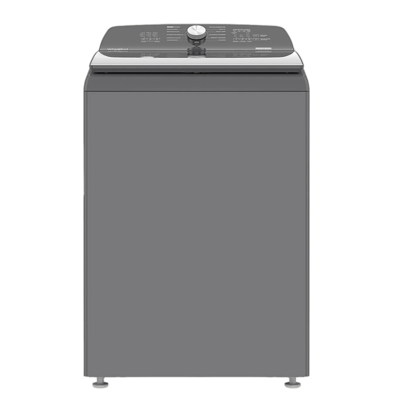
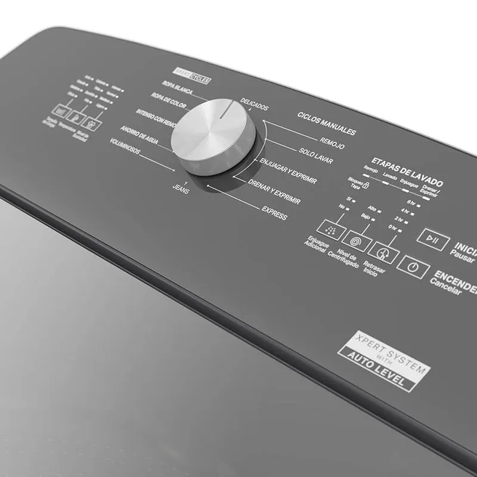

Lavadora Whirlpool carga superior de 25 KG gris cuenta con el innovador Xpert System que remueve mejor las manchas y cuida de los colores de tus prendas, con Impeller 3D, 8 ciclos automaticos, ahorro de agua y un ciclo adicional de remojo.


Lavadora carga superior 25kg cuenta con el innovador Xpert System, que remueve mejor las manchas y cuida de los colores de tus prendas. Además cuenta con Impeller 3D, 8 ciclos automáticos: Ropa Blanca Xpert Cycle, Ropa de Color Xpert Cycle, Intenso con Remojo Xpert Cycle, Ahorro de Agua Xpert Cycle, Delicados, Express, Jeans, Voluminosos, y 4 ciclos manuales: Remojo, Solo Lavar, Enjuagar y Exprimir, Drenar y Exprimir. Con 3 depositos automáticos, 3 tamaños de carga: CH, M , G + AutoLevel, 4 temperaturas: Fría, Semifría, Tibia, Caliente, y 4 niveles de suciedad: Ligero, Normal, Intenso, tapa de vidrio templado, indicador LED del estatus del ciclo y canasta 100% de acero inoxidable.